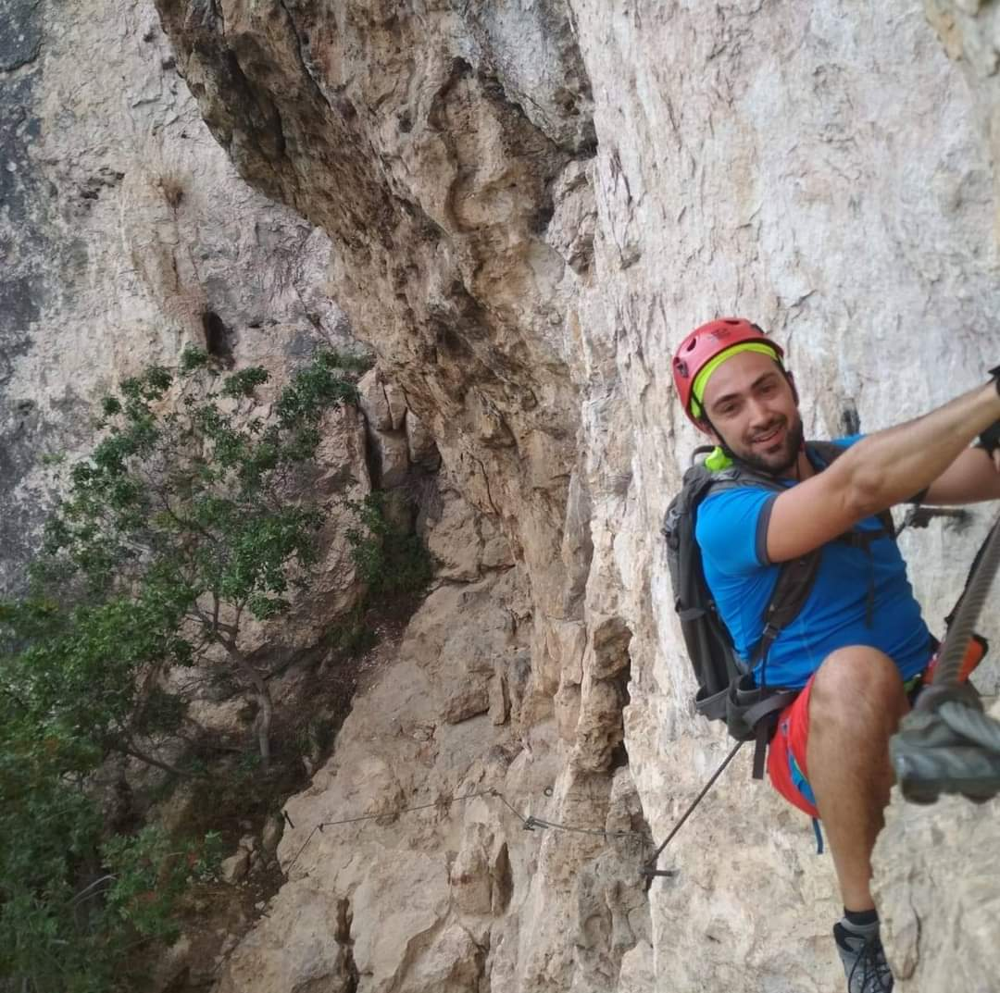

|
I am a researcher (RTD/A) at the Dipartimento di Matematica of thePolitecnico di Milano Piazza Leonardo da Vinci, 32 I-20133 Milano e-mail: davide.frapporti[ at ]polimi.it (old) davide.frapporti[ at ]edu.unige.it (old) davide.frapporti[ at ]uni-bayreuth.de (old) Previously I was a Post-Doc at the University of Genova and before a Post-Doc at the Universität Bayreuth with I. Bauer and F. Catanese, where I got the title "Habilitierter Doktor der Naturwissenschaften". I got my PhD at the Università di Trento under the supervision of R. Pignatelli. In November 2020, I was awarded the Italian “Abilitazione Scientifica Nazionale” (Settore Concorsuale: 01/A2; Seconda Fascia). In October 2021, I was awarded the qualification of "Privatdozent" through the “Lehrbefugnis für das Fachgebiet Mathematik”. Research interests: My field of research is complex algebraic geometry, in particular surfaces and varieties of general type and related topics. I am mostly interested in the construction (and classification) of new surfaces, in the study of their geometrical properties, and in the construction of new varieties having special properties. I mainly use a combinatorial and computational approach involving tools from topology, group theory, and representation theory and the aid of a computer algebra system. |

|